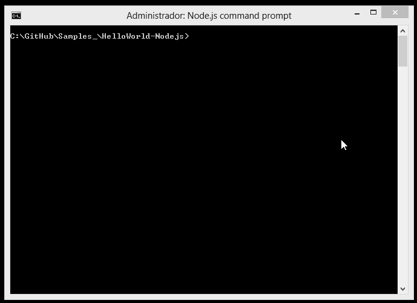

O que é ?
Uma plataforma construída sobre o Chrome's Runtime JavaScript v8, orientada a eventos, implementando a arquitetura assíncrona "non-blocking", que o torna leve e eficiente. Visando a simplicidade, provê diversos módulos que facilitam o desenvolvimento, então seja bem vindo ao "JavaScript On Server-Side".
Como instalar ?
-Windows
Recomendo utilizar o pacote (*.msi).
https://nodejs.org/#download
-Linux
Em muitas distribuições a versão homologada do NodeJs é 0.10.x, a versão mais recente (0.12.x) aceita a utilização de alguns recursos do ECMAScript (ES6).
Ubuntu
curl --silent --location https://deb.nodesource.com/setup_0.12 | sudo bash -
sudo apt-get install --yes nodejs
Debian
apt-get install curl
curl --silent --location https://deb.nodesource.com/setup_0.12 | bash -
sudo apt-get install --yes nodejs
RedHat, Fedora, CentOS
curl --silent --location https://rpm.nodesource.com/setup | bash -
yum -y install nodejs
NPM, Gerência de Pacotes ?
O NPM (Node Package Manager) possibilita que desenvolvedores compartilhem código, encorajando o reuso de código e facilitando a instalação/atualização de módulos externos ao NodeJs.
Comandos básicos
Configura o módulo/projeto
npm init
Instalar um pacote
npm install <nomedopacote>
Remover um pacote
npm uninstall <nomedopacote>
Vamos criar a aplicação ?
Primeiramente, vamos definir as configurações da nossa aplicação, este passo é necessário, pois o arquivo package.json será definido. Neste arquivo de configuração serão informados dados como nome do módulo, versão, autor, dados específicos e módulos necessários.
Crie uma pasta para o "Hello World".
Abra a pasta pelo console/cmd e digite o comando:
npm init
Preencha as informações sugeridas.

Após as configurações, crie um arquivo chamado index.js
index.js
var http = require('http'),
localAddress = '127.0.0.1',
listenPort = 2015;
function getVerseOfTheDay(callback, error) {
http.get('http://labs.bible.org/api/?passage=votd', function(response) {
var verse = '';
response.on('data', function(d) {
verse += d;
});
response.on('end', function () {
callback(verse);
});
}).on('error', function(e) {
error(e);
});
}
//Definição de um servidor
http.createServer(function (req, res) {
//Verso do Dia ;)
getVerseOfTheDay(function(verse){
res.writeHead(200, {'Content-Type': 'text/html'});
res.end(verse);
}, function(e){
res.writeHead(500, {'Content-Type': 'text/html'});
res.end(e);
});
}).listen(listenPort, localAddress);
console.log('Servidor rodando em %s na %s', localAddress, listenPort);
Código Fonte: GitHub
Executando!
Para executar a aplicação basta digitar o comando
node index.js
Será aberto uma aplicação web na porta 2015.
Quem utiliza ?
Podemos perceber na listagem abaixo que grandes empresas utilizam o NodeJs.
- Netflix - [Building With Node.js At Netflix]|(https://www.talentbuddy.co/blog/building-with-node-js-at-netflix/)
- New York Times - [Building With Node.js At The New York Times]|(https://www.talentbuddy.co/blog/building-with-node-js-at-the-new-york-times/)
- PayPal - [talentbuddy.coBuilding With Node.js at PayPal]|(https://www.talentbuddy.co/blog/building-with-node-js/)
- Medium - [On Building With Node.js At Medium]|(https://www.talentbuddy.co/blog/on-building-with-node-js-at-medium-and-growing-as-a-developer/)
- LinkedIn - [Building With Node.js At LinkedIn]|(https://www.talentbuddy.co/blog/building-with-node-js-at-linkedin/)
Até !
Obrigado pela atenção, espero que este artigo tenha contribuído.
Referências
http://www.quora.com/What-companies-are-using-Node-js-in-production
https://github.com/joyent/node/wiki/installing-node.js-via-package-manager